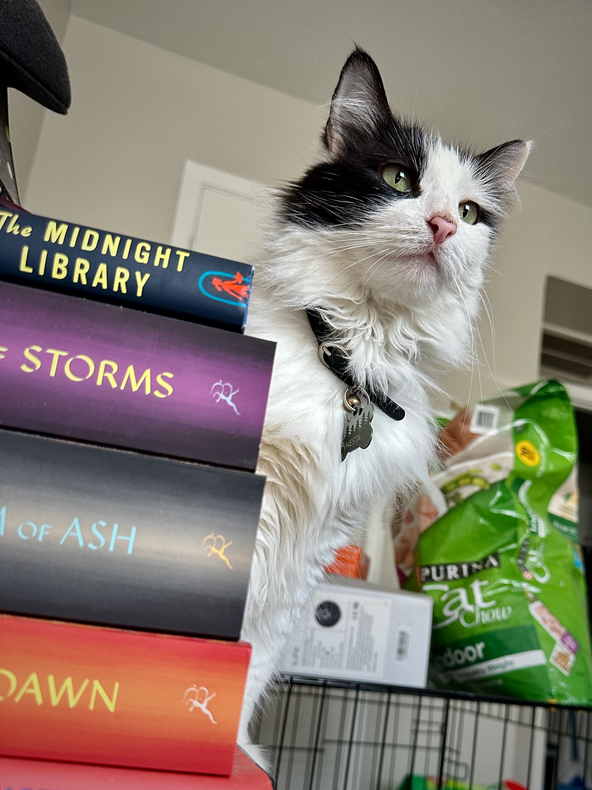
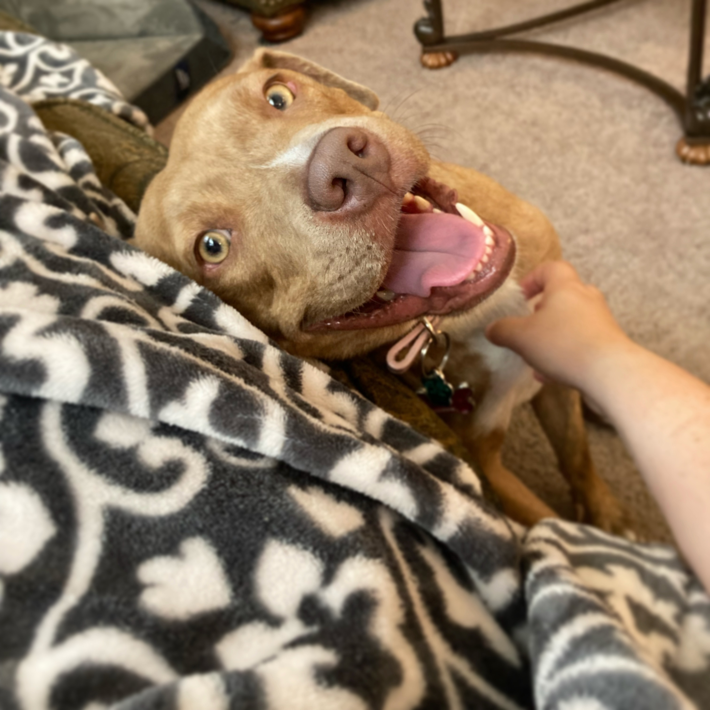

Professionally, I am a passionate people-oriented problem-solver. I thrive in team settings as a teacher, administrator, and creative. With strategic thinking and an empathetic approach, I excel at identifying organizational needs, brainstorming effective solutions, and encouraging teams as they implement new processes. I aspire to foster a healthy, creative culture wherever I am.
When I'm not at work, I enjoy learning coding languages for web development, playing piano, practicing my Spanish language skills, reading, and playing with my dog, Valerie, and my cat Nesta. On weekends, you are likely to find me in a coffee shop with friends or roaming the book aisle at Target.
 